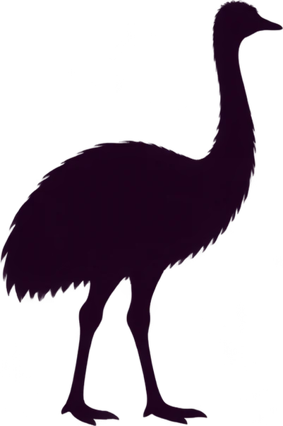
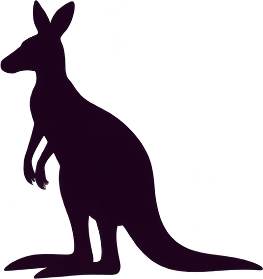
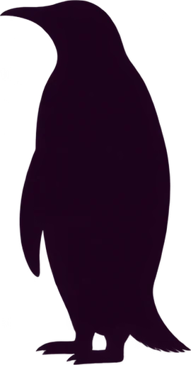
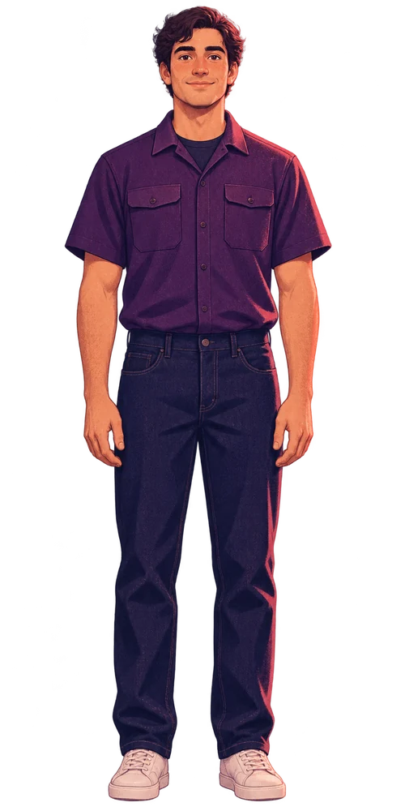

The Height Wall
Eight coworkers, one wall. See where the crew measures up.




- 191.5 cmTom
- 190.5 cmElliot
- 189 cmOscar
- 186 cmGabriel
- 184 cmAlex & Christian
- 180.5 cmAustin
- 177 cmDamir
- 168.1 cmAussie average
190 cmEmus can reach this height. Elliot is just 0.5 cm taller.
150 cmTypical for an adult male red kangaroo.
115 cmAbout as tall as an emperor penguin.
Top 3
- 1stTom191.5 cm
- 2ndElliot190.5 cm
- 3rdOscar189 cm
Just 1 cm separates Tom and Elliot. The whole crew spans 14.5 cm, and even the lowest mark beats the Aussie average by 8.9 cm.
Everyone on the wall
| Rank | Name | Height | vs Aussie avg. |
|---|---|---|---|
| 1 | Tom | 191.5 cm | +23.4 cm |
| 2 | Elliot | 190.5 cm | +22.4 cm |
| 3 | Oscar | 189 cm | +20.9 cm |
| 4 | Gabriel | 186 cm | +17.9 cm |
| 5 | Alex | 184 cm | +15.9 cm |
| 5 | Christian | 184 cm | +15.9 cm |
| 7 | Austin | 180.5 cm | +12.4 cm |
| 8 | Damir | 177 cm | +8.9 cm |